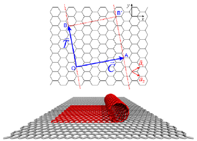
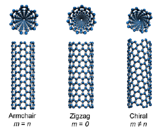

This plugin allows construction of carbon or boron nitride nanostructures like single-wall nanotubes or graphene-like sheets. The plugin provides both, a command line version (details below) and a GUI (see image on the right). The GUI is located in the VMD Extensions menu under Modeling/Nanotube Builder.
The plugin itself only computes the carbon atom positions according to the provided input, but then has the option to generate further topology information suitable for classical force field MD simulations, which can then be stored in files of a suitable format. This uses functionality provided by the TopoTools plugin, so if your topology is incorrect contact the author of that plugin for help. NOTE: since the construction of angle, dihedral, and improper definitions depends on the bonding topology, they will only be computed, when bond generation is enabled.
To simplify use of the generated structures in MD simulations, several properties are assigned to the generated atoms. Those may need to be adjusted depending on the force field and simulation software to be used. For carbon nanotubes the following assignments are made: name: C, residue name: CNT, segment id: TUB, element: C, atom type: CA, mass: 12.0107, radius: 1.7, chain: X and charge: 0.0. For graphene sheets the following assignments are made: name C, residue name: GRA, segment id: SHT, element: C, atom type: CA, mass: 12.0107, radius: 1.7, and charge: 0.0. For boron nitride nanotubes the following assignments are made: name: B, residue name: BNT, segment id: TUB, element: B, atom type: B, mass: 10.811, radius: 1.7265, chain: X and charge: 1.05. name: N, residue name: BNT, segment id: TUB, element: N, atom type: N, mass: 14.0067, radius: 1.6825, chain: X and charge: -1.05. For boron nitride sheets the following assignments are made: name: B, residue name: BNS, segment id: SHT, element: B, atom type: B, mass: 10.811, radius: 1.7265, chain: X and charge: 1.05. name: N, residue name: BNS, segment id: SHT, element: N, atom type: N, mass: 14.0067, radius: 1.6825, chain: X and charge: -1.05.
Single-wall carbon nanotubes (SWCNs) are cylindrical tubes of carbon atoms that can assume a wide range of atomic structures. Each structure is defined by two positive integers (n,m) called the chiral indices. The Nanotube Builder plugin generates SWCN structures of arbitrary length and chirality for the purpose of molecular simulations or nanoscience education. This plugin produces the unit cell of a SWCN by first generating coordinates of a rectangular graphene sheet with dimensions corresponding to the particular chiral indices specified by the user. These coordinates are then mapped onto a cylinder to generate the SWCN unit cell with its central axis aligned in the z-direction. The unit cell is then replicated along the z-axis to generate a SWCN of the desired length. The structure is loaded into VMD as a new molecule and contains the appropriate box dimensions for a SWCN periodic in the z-direction. Below are further details on SWCN structure.
 A SWCN can be thought of as a single sheet of graphite (graphene) rolled up into a seamless molecular cylinder (see figure on the right). C is the chiral vector and indicates the direction of the rolling. C extends from one carbon atom to a crystallographically equivalent atom on the graphene lattice. Thus, C can be written as a linear combination of the lattice basis vectors:
Here, n and m are positive integers known as the chiral indices. All physical properties of a given SWCN ultimately depend on these two numbers. SWCNs of different atomic structure result for various choices of n and m (see figure on the left). High symmetry armchair and zigzag SWCNs occur for m = n and m = 0, respectively.
 The length of C equals the circumference of the resulting SWCN. Thus, the SWCN diameter d is given by
Here, a = 2.49 Angstrom is the lattice constant of the graphene honeycomb lattice.
The translation vector T connects two equivalent carbon atoms along the SWCN axis and is given by
where gcd is the greatest common divisor function. The length of T gives the length of the SWCN unit cell and can be written as:
The nanotube builder can be run from the VMD console via the command:
nanotube -l <length> -n <n> -m <m> [-b <0|1>] [-a <0|1>] [-d <0|1>] [-i <0|1>] [-cc <blength>] [-ma <C-C|B-N>]
Note: because Nanotube Builder constructs SWCNs by first generating the unit cell, its actual length will be a multiple of the unit cell length determined by the chiral indices.
The graphene sheet builder is very similar to the nanotube builder, only that it will generate coordinates for a flat rectangular graphene sheet and optional a stack of multiple of them.
The graphene sheet builder can be run from the VMD console via the command:
graphene -lx <length> -ly <length> -type <armchair|zigzag> [-nlayers <number of layers>] [-b <0|1>] [-a <0|1>] [-d <0|1>] [-i <0|1>] [-cc <blength>] [-ma <C-C|B-N>]
Robert R. Johnson, Axel Kohlmeyer.